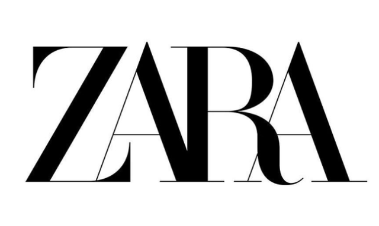

활용 사례
구글
구글(Google)은 접근할 수 있는 모든 웹 페이지를 탐색해 제목과 내용이 검색어와 얼마나 밀접한 관계를 가지는지를 측정해 지수로 환산하는 기술을 사용한다. 이 작업을 빠른 시간에 처리하기 위해 구글분산파일 시스템과 맵리듀스라는 새로운 처리기술을 개발하였다.
또한 예외 규칙이 많은 문법을 컴퓨터에게 단순히 가르치지 않고, 이미 번역한 수 억개의 문서에서 패턴을 조사하게 한뒤 번역 규칙을 컴퓨터가 스스로 발견하도록 하는 통계적 기계번역 기술(Statistical Machine Translation)을 사용하고 있다.
아마존
아마존(Amazon)은 고객의 도서 구매 데이터를 분석해 특정 책을 구매한 사람이 추가로 구매할 것으로 예상되는 도서 추천 시스템을 개발했다. 고객이 읽을 것으로 예상되는 책을 추천하면서 할인쿠폰도 지급하는 등 이벤트도 시행중이다. 또한 가격을 최적화 하는 데에도 빅데이터를 활용한다. 경쟁 업체의 가격, 주문 내역, 예상 이익률, 웹사이트에서의 활동 등 방대한 데이터를 수집해 가격을 10분마다 최적화하고 있다. 이러한 데이터 분석 경험에 기반해 아마존은 현재 하드웨어를 빌려주는 클라우드 서비스를 제공하고 있으며 비정형 빅데이터 처리를 위한 데이터베이스를 새로 개발하는 등 빅데이터 관련 기업의 입지를 강화하고 있다.
넷플릭스
넷플릭스(Netflix)는 엔터테인먼트 분야에서 빅데이터를 가장 적극적으로 활용하고 있는 기업 중 하나다. 넷플릭스의 이름을 알릴수 있도록 도운 영화<하우스 오브 카드> 역시 빅데이터를 기반으로 제작되었다. 현재는 이용자의 영화 대여 목록에 기초해 새로운 영화를 추천해주는 시네매치(Cinematch) 시스템을 개발하여 사용중이다. 또한 그 정확도를 높이기 위해 일반인을 대상으로 상금을 걸고 경진대회를 열고 있다.
스타벅스
스타벅스(STARBUCKS)는 매장을 내기 전에 빅데이터를 기반으로 상권을 철저하게 분석한다. 다른 스타벅스의 위치, 교통 패턴, 지역 인구 통계 등의 데이터를 다량 수집하고, 이를 분석하여 최상의 입점 위치를 찾아낸다. 또한 이 분석을 통해 신규 스타벅스 매장에 의해 기존 매장이 얼마나 타격을 입을 것인지도 예측하고 있다. 또한 스타벅스 자체 어플리케이션을 통해 소비자들의 정보를 수집해 개별 고객의 커피 취향부터 방문 예상시간까지 알아내 취향에 맞을 법한 신메뉴를 추천하는 서비스도 제공한다.
자라

자라(ZARA)는 현재 유행하는 패션 트렌드를 즉시에 반영해 단기간 동안 다품종 소량 생산 전략을 취하는 기업이다. 옷에 달려있는 RFID 태그를 이용해 가장 많이 팔린 옷은 무엇인지, 가장 많이 입어본 옷은 무엇인지 등과 같은 데이터를 수집하고 분석하여 잘 팔릴것 같은 새 옷을 만들어낸다. 또한 상품 수요를 예측하고 매장별 적정 재고를 산출하며 상품별 가격 결정과 운송 계획까지 실시간 데이터 분석에 의존하고 있다.
서울시 올빼미 버스
서울시에서 운영하는 심야 버스인 올빼미 버스는 서울 시내에 지하철과 버스가 끊기는 자정부터 오전 5시까지 운행하는 버스이다. 최소 비용으로 서울 시내 전역을 돌아다니는 버스 노선을 구축하기 위해 KT와 합작하여 빅데이터 분석결과를 활용하였다. 늦은시간 귀가할때 사람들은 집이나 주변 지인들에게 전화를 거는 습관이 있다는 것에서 아이디어를 얻어 자정부터 오전 5시까지 서울시내에서 발생한 통신 데이터를 분석하여 올빼미 버스 노선을 구축하였다.